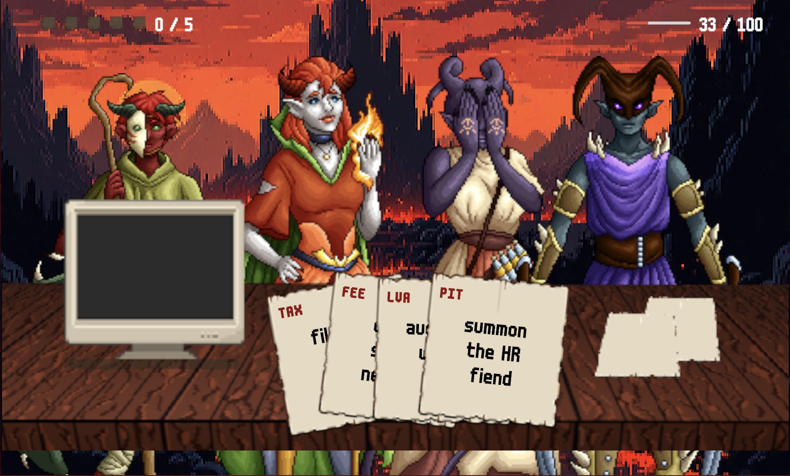
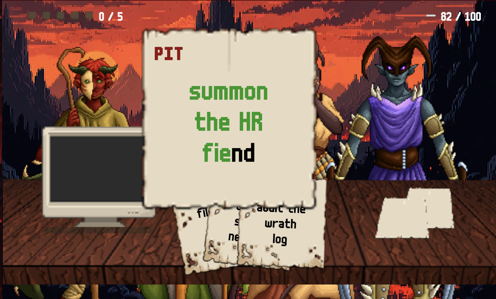

HellMinistrative
A typing game about getting through the Devil’s paperwork before the overheat bar decides it for you.
- Role
- 3D table and CAPTCHA art, built into the game
- Date
- Event
- Game Seed 2026
- Theme
- So Absurd, It’s Cool

My part
I modelled the 3D table and put it in the game. I also drew the CAPTCHA images and built them into the game’s pressure system.
How it plays
The Devil keeps sending administrative requests and you type them out. Your speed and accuracy feed an overheat bar, and that bar decides whether you win or lose the level.
- CAPTCHAs interrupt you and make heat rise 1.5× faster until you solve them.
- Documents each carry their own priority and disappear if you leave them too long.
Why speed isn’t enough
Fast typing on the wrong document still loses. You have to read the queue, decide what matters right now, and stay accurate while every delay costs more.
Screenshots
